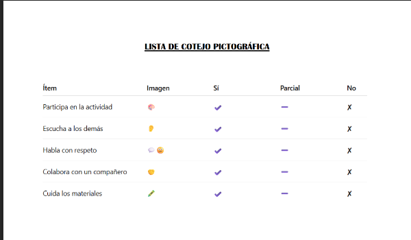

ELEGIMOS Y CREAMOS INSTRUMENTOS DE EVALUACIÓN📝
El proyecto "RespetARTE: el respeto como arte" que estoy llevando a cabo, busca desarrollar en mis alumnos de primero de primaria habilidades de convivencia, comunicación respetuosa y expresión artística. Dado que el grupo, además de que son aún pequeños, como os he comentado anteriormente está compuesto por 6 niños, de los cuales 3 son de origen marroquí y presentan bajo rendimiento académico, es fundamental utilizar instrumentos de evaluación flexibles, visuales, accesibles, y que permitan valorar tanto el proceso como el logro. Por ello, he decidido utilizar tres instrumentos de evaluación adecuados para este contexto: una lista de cotejo, una rúbrica visual (realizada con la herramienta digital de CANVA) y un diario de observación del docente (del cual doy detalle a continuación también).
1. RÚBRICA VISUAL DE PROGRESO (realizado con la herramienta digital CANVA, ver enlace a continuación)
Descripción del instrumento
La rúbrica visual permite evaluar conductas y procesos usando imágenes o iconos en lugar de textos largos. Es ideal para alumnado con dificultades lingüísticas o de comprensión lectora.
Evalúa aspectos clave del proyecto relacionados con el respeto, la participación y la expresión artística.
JUSTIFICACIÓN
· Facilita la comprensión a alumnos con bajo nivel de español.
· Permite ofrecer retroalimentación clara y frecuente.
· Favorece la autoevaluación sencilla y accesible.
¿Cómo podríamos aplicarla?
Al finalizar cada sesión del proyecto.
Se puede presentar en cartulina, en el pizarrón digital o en tarjetas individuales.
Los alumnos eligen la carita que creen que corresponde, y luego el docente confirma o negocia la evaluación.
RUBRICA VISUAL
Materiales gráficos Victoria RB creados con Canva.com
2. DIARIO DE OBSERVACIÓN
Descripción del instrumento:
Como bien sabemos, el diario de observación es un registro sistemático donde el docente anota comportamientos, avances y dificultades observados durante las actividades del proyecto. Puede incluir descripciones, fechas y ejemplos.
JUSTIFICACIÓN:
· Permite recoger información cualitativa rica, especialmente útil en grupos pequeños.
· Capta aspectos no visibles en evaluaciones escritas (actitudes, comunicación, integración, esfuerzo).
· Es flexible y se adapta a la diversidad cultural y lingüística.
ASPECTOS QUE SE PUEDEN OBSERVAR:
1. Interacciones sociales (¿coopera?, ¿respeta turnos?, ¿ayuda a otros?)
2. Comunicación verbal y no verbal, especialmente relevante para alumnado árabe.
3. Motivación y esfuerzo en tareas artísticas.
4. Autonomía y seguimiento de rutinas.
5. Integración emocional (seguridad, participación, frustración)
FORMATO PARA EL DIARIO DE OBSERVACIÓN:
Fecha:
Actividad del proyecto: (ej. creación del emoji de respeto)
Alumno:
Observaciones:
· Comportamiento social:
· Lenguaje:
· Participación en la actividad artística:
· Dificultades observadas:
· Logros destacados:
Acciones del docente / apoyo ofrecido:
Próximos pasos:
¿Cómo podríamos aplicarlo?
Registrar solo momentos clave, no toda la sesión.
Utilizar un cuaderno o formato digital.
Revisar semanalmente para detectar patrones y ajustar estrategias.
3. LISTA DE COTEJO PICTOGRÁFICA (ver documento adjunto)

Materiales gráficos Victoria RB
Descripción del instrumento:
Una lista de cotejo pictográfica es una herramienta de evaluación que utiliza dibujos, símbolos o imágenes en lugar de solo texto.
JUSTIFICACIÓN:
Su uso se justifica especialmente en 1º de primaria con bajo nivel académico porque:
- Facilita la comprensión: Los niños que aún no leen o tienen dificultades pueden entender visualmente qué se espera de ellos.
- Favorece la autonomía: al reconocer imágenes, los estudiantes pueden auto-verificar su desempeño (por ejemplo: una imagen de un lápiz → “¿Traje mis materiales?”).
- Reduce la ansiedad: las imágenes hacen que la evaluación sea menos intimidante y más amigable.
- Apoya la atención y memoria: los pictogramas ayudan a recordar rutinas, comportamientos o pasos de una actividad.
- Incluyente y accesible: funciona para estudiantes con rezago académico, necesidades educativas o que no hablan español como lengua materna.
ASPECTOS QUE SE PUEDEN OBSERVAR:
Esta herramienta permite observar aspectos como rutinas, comportamiento, habilidades socioemocionales y tareas académicas básicas.
¿Cómo podríamos aplicarla?
Su aplicación consiste en seleccionar indicadores simples, representarlos con pictogramas, explicar su uso, aplicarla diariamente y ofrecer retroalimentación positiva que favorezca el desarrollo integral del estudiante.
CONCLUSIÓN: Viendo que me he extendido en la explicación detallada de cada uno de los instrumentos que he llevado a cabo para la evaluación, he pensado en resumir en estas líneas y simplemente comentar que los instrumentos propuestos, rúbrica visual, diario de observación y lista de cotejo, nos permiten evaluar de forma integral las competencias que trabaja mi proyecto RespetARTE, adaptándose a las necesidades de un grupo pequeño, diverso y con dificultades de aprendizaje. Los tres son fáciles de aplicar, motivadores y adecuados para valorar tanto el proceso como el resultado, garantizando una evaluación justa e inclusiva.